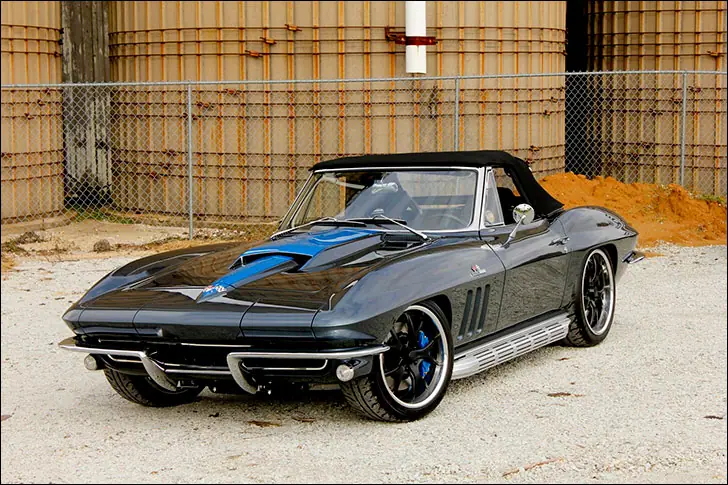
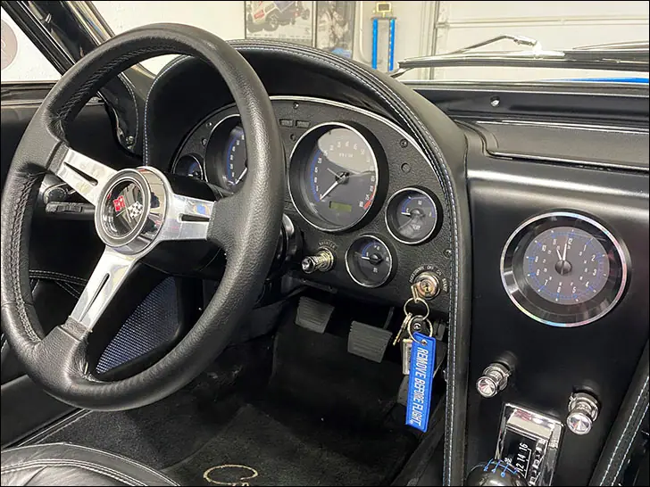
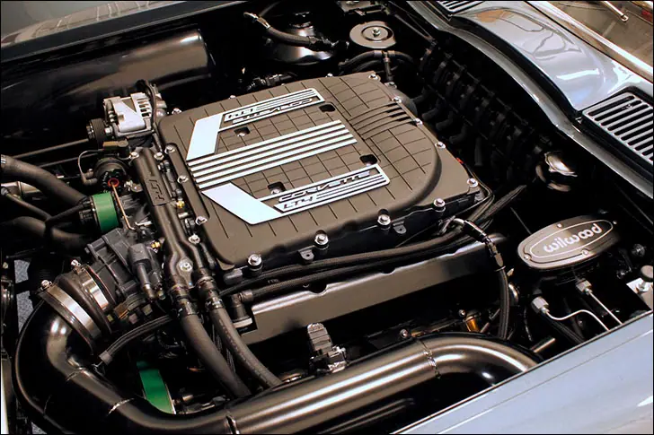
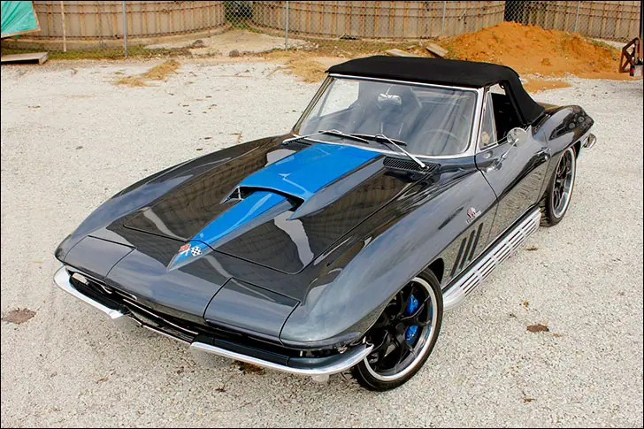
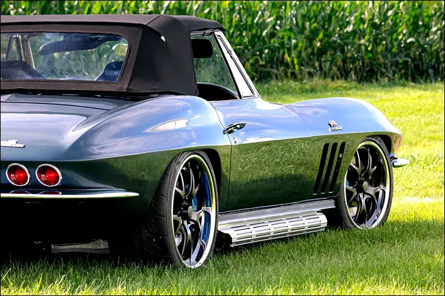

Hot Rod Barn 'Vette

The Doctor Is In
Take a minute and ask yourself, “what vehicle is iconic to the year I was born”? I was born in 1972, Vietnam was winding down, the gas wars were gearing up and I Can See Clearly Now by Johnny Nash was #1 on the Billboard when I came into this world. There are still some good options if I were to choose a hot rod to symbolize 1972. Some of you readers born in 1982 for example might struggle to find some “muscle” to show off your birth year. For the record, the VW Beetle was the number 1 selling car in 1972, not my first choice for this fantasy.

Jason Reitz with The Hot Rod Barn in Joliet Illinois has a customer that had this exact vision in mind. Dr. Mark Stewart, born in 1965, approached Jason and wanted his shop to build him a 1965 Corvette, something he’s always wanted. The team located a 65 Vette that had been stored in a covered flat bed for the last 30 years. It was rescued and brought to the shop for a lengthy surgical procedure.

Dr. Stewart is not a plastic surgeon, but The Hot Rod Barn has some experience in this area. The topless Vette was dissected and every single piece was inspected and either used, thrown or replaced. An SRIII Motorsports chassis is the backbone of this beast, with a 900 hp GM LT4 as the heart. The dry oil sump engine gave them more ground clearance and got the already low Vette even lower.

At some point during the 2-year build, a decision had to be made on the color. Jason uses Axalta brand products and while visiting with them, he was informed the upcoming Color of the Year was going to be called Gallant Gray, a dark charcoal gray with crushed blue glass for the metal flake effect. Perfect, this will look great under the bright lights of the Las Vegas Convention Center at SEMA, which is where it was unveiled in the fall of 2017.

The typical list of creature comforts and performance enhancing extras are all included, big Wilwood brakes, Currie 9” rear end, Vintage Air, Dakota Digital VHX gauges, Tremec 6 speed, the list is as long as the burnouts this car can do.
As Jason puts it, “the car is a blast to drive, it’s like intentionally kicking a bull and getting on for the ride”. It does it all, it hauls, it stops, it corners, it looks cool doing through it all! Now hopefully the Doctor starts making house calls.
Also on dakotadigital.com.